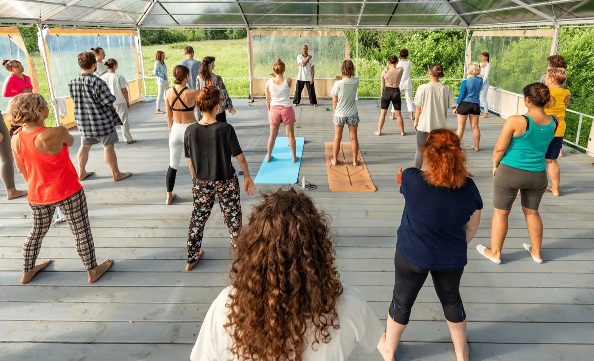
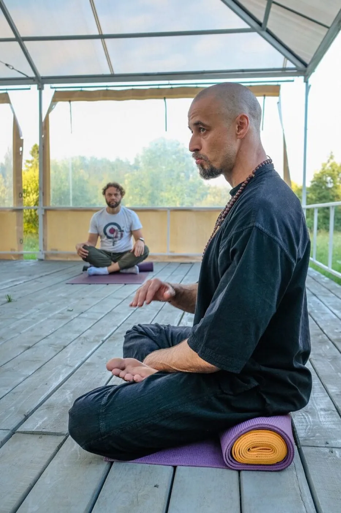
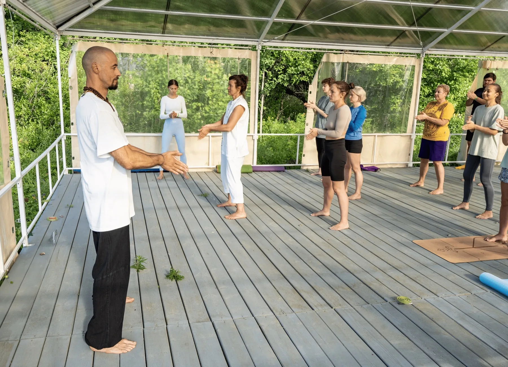

Артефакты доверия


Реальные фото практики и сканы дипломов вместо стоков.
Масштабирование стиля «Точка опоры» на основной портал BarinovDao
Лендинги курсов используют barinov-brand.css (Navy + Teal). Следующий шаг — перенос на barinovdao.ru.
Разнородные шрифты, избыток тёмных плашек, нет сквозной научной иерархии, как на лендинге курса.
Светлая палитра, «воздух», экспертные блоки с логотипами ВОЗ/Cochrane, типографика Playfair Display.
Переносим атмосферу Premium Yoga & Science. Портал — не каталог услуг, а интеллектуальная база знаний.

Сквозной блок «Научная опора» на каждой странице услуг. Ссылки на PubMed, Cochrane, ВОЗ — как на tochka-opory.html.
Cream (#FDFBF7), Navy (#002B49), акцент Teal (#00A3AD). Без чистого чёрного.
Playfair Display — заголовки. Montserrat — текст.
Много воздуха. Текстовые колонки до ~600px.
UI-кит и цветовая схема всего сайта.
Блок «Об авторе»: кейсы и дипломы.
Модуль «Научная опора» в услугах.
Формы захвата (FormSubmit / Telegram).

Акцент на методологии, а не на списке заслуг. Студийные фото на светлом фоне. Логотипы «Зенита» и Академии Вагановой как триггеры доверия.
Реальные фото практики и сканы дипломов вместо стоков.
| Тип продукта | Целевая аудитория | Визуальный акцент |
|---|---|---|
| Курс «Точка опоры» | Массовый рынок, ЗОЖ | Lifestyle + наука |
| Йога онлайн | Практикующие дома | Тёплая земляная палитра |
| Ретриты | Ученики со стажем | Природа, мягкие тона |
BarinovDao — эталонный медиа-ресурс в нише осознанного движения. Единый стиль даёт узнаваемость и снижает стоимость прогрева перед покупкой курса.

Готовы приступить к трансформации BarinovDao